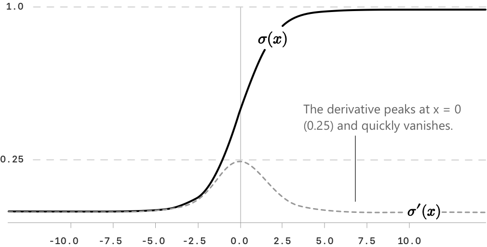

Сигмоїдна функція
Означення
Сигмоїдальна функція — це дійснозна функція дійсної змінної, яка набуває значень суворо між \(0\) та \(1\), наближаючись до кожного з двох екстремумів асимптотично. Вона забезпечує гладке відображення дійсної прямої на одиничний проміжок і широко використовується в аналізі та машинному навчанні. Її означення є наступним:
\[ \sigma(x) = \frac{1}{1 + e^{-x}} \]
Сигмоїдальна функція може бути записана в еквівалентних формах, які іноді є зручнішими для обчислень або для встановлення певних властивостей. Одна з таких форм отримується шляхом множення чисельника та знаменника на \(e^x\):
\[ \sigma(x) = \frac{e^x}{e^x + 1} \]
Цей вираз повністю еквівалентний початковому означенню і може спростити певні алгебраїчні маніпуляції.

- Область визначення — \(\mathbb{R}\), тоді як область значень — відкритий інтервал \((0,1)\).
- Функція є строго зростаючою на \(\mathbb{R}\), оскільки її похідна завжди додатня, і, отже, є бієктивною з \(\mathbb{R}\) на \((0,1)\).
- Функція не має локальних екстремумів і має рівно одну точку перегину в \((0, \frac{1}{2})\).
- Границі на нескінченності є наступними: \[ \lim_{x \to -\infty} \sigma(x) = 0\] \[ \lim_{x \to +\infty} \sigma(x) = 1\]
S-подібна крива відображає поведінку функції: повільний ріст для дуже від'ємних значень \(x\), швидкий перехід в околі початку координат і насичення для дуже додатних значень.
Властивості сигмоїдальної функції
Наступні властивості характеризують сигмоїдальну функцію аналітично та обґрунтовують її широке використання як у математичному аналізі, так і в прикладних задачах. Функція задовольняє наступному відношенню симетрії відносно початку координат:
\[ \sigma(-x) = 1 – \sigma(x) \]
Ця тотожність, яку можна перевірити шляхом прямої підстановки, означає, що графік \(\sigma\) симетричний відносно точки:
\[\left(0,\, \frac{1}{2}\right)\]
Значення функції в початку координат дорівнює:
\[ \sigma(0) = \frac{1}{1 + e^{0}} = \frac{1}{2} \]
Границі на краях дійсної прямої є наступними:
\[\lim_{x \to -\infty} \sigma(x) = 0\] \[ \lim_{x \to +\infty} \sigma(x) = 1\]
Прямі \(y = 0\) та \(y = 1\), отже, є горизонтальними асимптотами графіка.
Похідна сигмоїдальної функції
Однією з найвизначніших властивостей сигмоїдальної функції є те, що її похідна може бути виражена в надзвичайно компактній формі через саму функцію. Перша похідна має наступний вигляд:
\[ \sigma’(x) = \sigma(x)\,\bigl(1 - \sigma(x)\bigr) \]
Щоб перевірити цю тотожність, можна скористатися прямим обчисленням. Записуючи \(\sigma(x) = (1 + e^{-x})^{-1}\) та застосовуючи правило ланцюга, отримаємо наступне:
\[ \sigma’(x) = \frac{e^{-x}}{(1 + e^{-x})^2} \]
Зауважимо, що чисельник можна записати як \((1 + e^{-x}) – 1\), тоді вираз розпадається на добуток:
\[ \begin{align} \sigma’(x) &= \frac{1}{1 + e^{-x}} \cdot \frac{e^{-x}}{1 + e^{-x}} \\[6pt] &= \sigma(x)\,\bigl(1 – \sigma(x)\bigr) \end{align} \]
Оскільки \(\sigma(x) \in (0, 1)\) для кожного \(x \in \mathbb{R}\), похідна завжди є суворо додатною, що підтверджує, що функція є суворо зростаючою. Максимальне значення похідної досягається при \(x = 0\), де \(\sigma’(0) = 1/4\).
Друга похідна та випуклість
Друга похідна сигмоїдальної функції отримується шляхом диференціювання виразу: \[\sigma’(x) = \sigma(x)\,(1 - \sigma(x))\]
Застосовуючи правило добутку та підставляючи вираз для \(\sigma’(x)\), отримаємо наступне:
\[ \begin{align} \sigma’‘(x) &= \sigma’(x),(1 – \sigma(x)) - \sigma(x)\,\sigma’(x) \\[6pt] &= \sigma’(x)\,(1 – 2\sigma(x)) \\[6pt] &= \sigma(x)\,(1 - \sigma(x))\,(1 - 2\sigma(x)) \end{align} \]
Знак \(\sigma’'(x)\) повністю визначається множником \(1 – 2\sigma(x)\), оскільки \(\sigma(x)(1 – \sigma(x)) > 0\) для всіх \(x \in \mathbb{R}\). Оскільки \(\sigma\) є строго зростаючою і \(\sigma(0) = \tfrac{1}{2}\), множник \(1 – 2\sigma(x)\) є додатним при \(x < 0\) та від'ємним при \(x > 0\).

Звідси випливає, що функція є випуклою вниз на \((-\infty, 0)\) та випуклою вгору на \((0, +\infty)\). Точка \(x = 0\), отже, є точкою перегину, в якій \(\sigma’'(0) = 0\) і випуклість змінює знак.
Зв'язок із логістичною функцією
Сигмоїдальна функція збігається з особливим випадком логістичної функції, в якому швидкість зростання дорівнює \(1\), а точка перегину розташована в початку координат. Загальний вигляд логістичної функції є наступним:
\[ f(x) = \frac{L}{1 + e^{-k(x - x_0)}} \]
У цьому виразі \(L\) позначає верхнє асимптотичне значення, \(k\) — швидкість зростання, а \(x_0\) — точку перегину. Стандартна сигмоїдальна функція відповідає вибору \(L = 1\), \(k = 1\) та \(x_0 = 0\).
Зв'язок із гіперболічним тангенсом
Сигмоїдальна функція тісно пов'язана з гіперболічним тангенсом \(\tanh.\) Виконується наступна тотожність:
\[ \sigma(x) = \frac{1 + \tanh\!\left(\dfrac{x}{2}\right)}{2} \]
Еквівалентна форма є наступною:
\[ \tanh(x) = 2\,\sigma(2x) – 1 \]
Цей зв'язок показує, що дві функції відрізняються суттєво лише вертикальним зсувом та масштабуванням. У той час як сигмоїда відображає \(\mathbb{R}\) в інтервал \((0, 1)\), гіперболічний тангенс відображає \(\mathbb{R}\) в інтервал \((-1, 1)\). Обидві функції мають однакову S-подібну криву та однаковий тип насичення на краях.
Обернена сигмоїдальна функція
Оскільки сигмоїдальна функція є строго монотонною, вона має обернену функцію, визначену на \((0, 1)\). Ця обернена функція відома як логіт-функція, і її вираз є наступним:
\[ \sigma^{-1}(p) = \ln\!\left(\frac{p}{1-p}\right) \]
Аргумент логарифма називається відношенням шансів. Таким чином, логіт-функція відображає ймовірність \(p \in (0,1)\) у відповідне дійсне значення за шкалою логарифма шансів.
Приклад
Розглянемо задачу обчислення значення сигмоїдальної функції при \(x = 2\) та перевірки того, що її похідна в цій точці узгоджується з формулою \(\sigma’(x) = \sigma(x)(1 - \sigma(x))\). Значення функції є наступним:
\[ \sigma(2) = \frac{1}{1 + e^{-2}} \]
Оскільки \(e^{-2} \approx 0.1353\), отримаємо:
\[ \sigma(2) \approx \frac{1}{1.1353} \approx 0.8808 \]
Застосовуючи формулу похідної, значення \(\sigma’(2)\) є наступним:
\[ \sigma’(2) = \sigma(2),\bigl(1 - \sigma(2)\bigr) \approx 0.8808 \cdot 0.1192 \approx 0.1050 \]
Значення похідної сигмоїдальної функції при \(x = 2\), отже, приблизно дорівнює \(0.1050\), що підтверджує як формулу, так і той факт, що функція зростає дуже повільно в цій області, вже наблизившись до насичення.